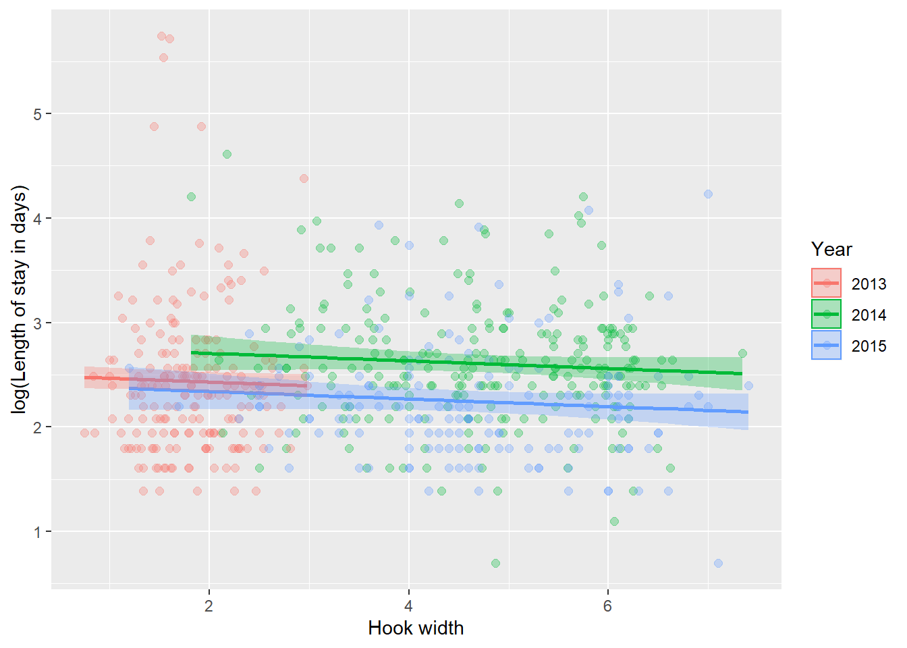

10.4 Two-way ANOVA
For this example, we will consider a new data set. These data are from an experiment in Restorative Dentistry and Endodontics that was published in 2014. The study examines effects of drying light and resin type on the strength of a bonding resin for teeth.
The full citation for the paper is:
Kim, H-Y. 2014. Statistical notes for clinical researchers: Two-way analysis of variance (ANOVA)-exploring possible interaction between factors. Restorative Dentistry and Endodontics 39(2):143-147.
Here are the data:
Now, fit a model to the data.
If we make an ANOVA table for this two-way ANOVA, we see that there are significant main effects of resin type but not lights used for drying.
## Analysis of Variance Table
##
## Response: mpa
## Df Sum Sq Mean Sq F value Pr(>F)
## lights 1 34.7 34.72 0.6797 0.4123
## resin 3 1999.7 666.57 13.0514 6.036e-07 ***
## Residuals 75 3830.5 51.07
## ---
## Signif. codes: 0 '***' 0.001 '**' 0.01 '*' 0.05 '.' 0.1 ' ' 1We can also examine the model coeffficients for a closer look at what this means.
##
## Call:
## lm(formula = mpa ~ lights + resin, data = dental)
##
## Residuals:
## Min 1Q Median 3Q Max
## -14.1162 -4.9531 0.1188 4.4613 14.4663
##
## Coefficients:
## Estimate Std. Error t value Pr(>|t|)
## (Intercept) 19.074 1.787 10.676 < 2e-16 ***
## lightsLED -1.318 1.598 -0.824 0.41229
## resinB 3.815 2.260 1.688 0.09555 .
## resinC 6.740 2.260 2.982 0.00386 **
## resinD 13.660 2.260 6.044 5.39e-08 ***
## ---
## Signif. codes: 0 '***' 0.001 '**' 0.01 '*' 0.05 '.' 0.1 ' ' 1
##
## Residual standard error: 7.147 on 75 degrees of freedom
## Multiple R-squared: 0.3469, Adjusted R-squared: 0.312
## F-statistic: 9.958 on 4 and 75 DF, p-value: 1.616e-06Remember, in our data we had 2 kinds of lights, and 4 kinds of resin. But, here we have one less of each! Why is this? It is because of the way categorical variables are dummy coded for linear models, so one level of each variable is wrapped up in the estimate for our intercept.
Right now, you might be a little confused about how to calculate and show the effect size for these variables. If you are not, you should probably take a more advanced stats class and get a better book.
One reasonable option might be to summarize the data by the means and plot the means.
# Summarize the means using ddply
library(plyr)
mus <- ddply(dental, c('lights', 'resin'), summarize, mean = mean(mpa))
# Plot the summaries
# Make resin into a numeric for plotting trick
resin <- as.numeric(dental$resin)
# Set graphical parameters
par(mfrow=c(1,1), mar=c(5,5,1,1))
# Plot the raw data by resin type
# and color code for lights on the second
# linen of code ( bg=c('blue', 'red')[c(dental$lights)] )
plot(x=resin, y=dental$mpa, type='p',
pch=21, bg=c('blue', 'red')[c(dental$lights)],
ylim=c(0,50), ylab='', xlab='', yaxt='n', xaxt='n')
# Plot the means for Halogen lights by resin type
par(new=TRUE)
plot(mus$mean[mus$lights=='Halogen'], pch=21, bg='blue',
ylim=c(0,50), ylab='', xlab='', yaxt='n', xaxt='n', cex=1.75)
# Add a line for Halogen lights by resin type
lines(mus$mean[mus$lights=='Halogen'], type='l', col='blue')
# Add the plot for LED lights
# Plot the means for LED by resin type
par(new=TRUE)
plot(mus$mean[mus$lights=='LED'], pch=21, bg='red',
ylim=c(0,50), ylab='', xlab='', yaxt='n', xaxt='n', cex=1.75)
# Add a line for LED lights by resin type
lines(mus$mean[mus$lights=='LED'], type='l', col='red')
# Add x and y axes
axis(side = 1, at=c(1,2,3,4), labels=c('A','B','C','D'))
axis(side = 2, las=2)
# Add labels
mtext('Resin type', side=1, line=3, cex=1.25)
mtext('Bond strength (mpa)', side=2, line=3, cex=1.25)
# Let us have a legend
legend(x=1, y=50,
legend = c('Halogen', 'LED'),
lty=1, col=c('blue', 'red'),
bty='n')
Another option is to make predictions for each combination of levels. We can do this using the math behind our model.
# Store the coefficients in their own object
res <- data.frame( summary(dental.mod)$coefficients )
res## Estimate Std..Error t.value Pr...t..
## (Intercept) 19.07375 1.786635 10.6757944 1.044637e-16
## lightsLED -1.31750 1.598015 -0.8244603 4.122925e-01
## resinB 3.81500 2.259935 1.6881019 9.554608e-02
## resinC 6.74000 2.259935 2.9823872 3.856472e-03
## resinD 13.66000 2.259935 6.0444226 5.386106e-08Make predictions for Halogen lights. Remember that the intercept term is the coefficient for Halogen lights and resin A. All other coefficients are interpreted in relation to this one, so we base our calculations for each level on this term.
hal <- c(
res[1,1], # Halogen lights, resin A
res[1,1] + res[3,1], # Halogen lights, resin B
res[1,1] + res[4,1], # Halogen lights, resin C
res[1,1] + res[5,1] # Halogen lights, resin D
)Make predictions for LED lights. Remember that the intercept term is the coefficient for Halogen lights and resin A. All other coefficients are interpreted in relation to this one, so we base our calculations for each level on this term. Sound familiar?? Now, to predict effects of LED lights and each resin type we need to include the coefficient for lightsLED.
led = c(
res[1,1] + res[2,1], # LED lights, resin A
res[1,1] + res[2,1] + res[3,1], # LED lights, resin B
res[1,1] + res[2,1] + res[4,1], # LED lights, resin C
res[1,1] + res[2,1] + res[5,1] # LED lights, resin D
)How do these values compare to our empirical means? Let’s see…
# Plot the summaries
# Set graphical parameters
par(mfrow=c(1,1), mar=c(5,5,1,1))
# Plot the raw data by resin type and color code for lights
plot(x=resin, y=dental$mpa, type='p',
pch=21, bg=c('blue', 'red')[c(dental$lights)],
ylim=c(0,50), ylab='', xlab='', yaxt='n', xaxt='n')
par(new=TRUE)
# Plot the means for Halogen lights by resin type
plot(hal, pch=21, bg='blue', cex = 1.75,
ylim=c(0,50), ylab='', xlab='', yaxt='n', xaxt='n')
# Add a line for Halogen lights by resin type
lines(hal, type='l', col='blue')
# Add the plot for LED lights
par(new=TRUE)
# Plot the means for LED by resin type
plot(led, pch=21, bg='red', cex=1.75,
ylim=c(0,50), ylab='', xlab='', yaxt='n', xaxt='n')
# Add a line for LED lights by resin type
lines(led, type='l', col='red')
# Add x and y axes
axis(side = 1, at=c(1,2,3,4), labels=c('A','B','C','D'))
axis(side = 2, las=2)
# Add labels
mtext('Resin type', side=1, line=3, cex=1.25)
#mtext('Bond strength (mpa)', side=2, line=3, cex=1.25)
# Let us have a legend
legend(x=1, y=50, legend = c('Halogen', 'LED'), lty=1,
col=c('blue', 'red'), bty='n')
Well now, that is definitely different. We can clearly see now that there is no real effect of lights on the response, and that in our model we assumed that the relationship between resin and bond strength is the same across light types. So what do the differences between our empirical data and our predictions mean?
All models are wrong and some are useful.
Clearly this specific model is not very useful. The reason for that is that in this model we have specified that the intercept of the line can change with light type, but not the slopes. We will examine a more useful model below.
LESSON: This is why we should always check the trends in our model predictions against the raw data. These should be presented together wherever possible (becomes more difficult in complex models).
Finally, we can use the built-in R functions to make predictions from our model:
# Get all combinations of the unique
# values for light and resin types
# using the 'expand.grid' function
dnew <- data.frame(
expand.grid(unique(dental$lights), unique(dental$resin))
)
# Give the new df names
names(dnew) <- c('lights', 'resin')
# Sort the dataframe by lights for ease
dnew <- dnew[with(dnew, order(lights)), ]Make predictions from these data. Because we are interested in comparing the different levels here, we can look at 95% CIs instead of prediction intervals.
# Make the predictions
dpreds <- predict(
object = dental.mod, newdata = dnew, interval = 'confidence'
)
# Now plot the predictions from this model
# Set graphical parameters
par(mfrow=c(1,1), mar=c(5,5,1,1))
# Plot the raw data by resin type and color code for lights
plot(x=resin, y=dental$mpa, type='p',
pch=21, bg=c('blue', 'red')[c(dental$lights)],
ylim=c(0,50), ylab='', xlab='', yaxt='n', xaxt='n')
# Add lines for the mean and prediction intervals for halogen
lines(dpreds[1:4,1], col='blue', lty=1)
lines(dpreds[1:4,2], col='blue', lty=2)
lines(dpreds[1:4,3], col='blue', lty=2)
# Add lines for the mean and prediction intervals for LED
lines(dpreds[5:8,1], col='red', lty=1)
lines(dpreds[5:8,2], col='red', lty=2)
lines(dpreds[5:8,3], col='red', lty=2)
# Add x and y axes
axis(side = 1, at=c(1,2,3,4), labels=c('A','B','C','D'))
axis(side = 2, las=2)
# Add labels
mtext('Resin type', side=1, line=3, cex=1.25)
# Let us have a legend
legend(x=1, y=50, legend = c('Halogen', 'LED'), lty=1,
col=c('blue', 'red'), bty='n')
Two things to note here:
1. There is huge overlap in the CIs for these relationships, which makes us comfortable in the fact that we found no evidence for an effect of lights
2. These predictions are pretty messed up compared to the patterns we saw in the raw data…more to follow